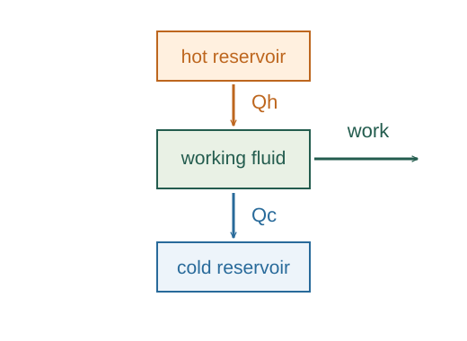
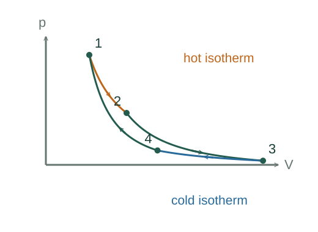

Derive the Carnot heat ratio and efficiency
A reversible Carnot cycle has two isothermal and two adiabatic legs. For an ideal-gas working substance, matching the adiabatic endpoints makes the isothermal volume ratios equal, producing the heat ratio.
What the symbols mean
Th > Tc: absolute reservoir temperatures; Qh > 0: heat absorbed; Qc > 0: heat rejected in magnitude; Wout: net cycle work.
When this applies
Reversible engine between two reservoirs. The explicit working-substance calculation uses a fixed amount of ideal gas with constant heat capacities.

Label the four states in order
Let 1→2 be isothermal expansion at Th, 2→3 adiabatic expansion to Tc, 3→4 isothermal compression at Tc, and 4→1 adiabatic compression to Th.
Calculate each isothermal heat magnitude
An ideal gas has no internal-energy change along an isotherm. Therefore the heat magnitude equals the reversible isothermal work magnitude.
Go deeper at this stepDerive the logarithmic work formulaDerive the logarithm in isothermal gas workUse the two adiabatic constraints
On 2→3 and 4→1, TVᵞ⁻¹ is constant. Dividing the two relations cancels the temperatures, so V₂/V₁ = V₃/V₄.

Cancel the identical logarithms
The heat formulas contain the same dimensionless volume ratio, leaving only the temperature ratio. No entropy definition was used in this calculation.
Apply energy conservation over a cycle
The internal energy returns to its starting value, so net output is Qh − Qc. Efficiency is that output divided by the input heat. The second law makes the reversible result universal, independent of the working substance.
Go deeper at this stepWhy is the reversible heat ratio universal?Why the reversible Clausius cyclic integral is zeroWhere each equation comes from
Derived equations link to an argument below. Definitions, physical postulates and constitutive models are identified as the inputs of that argument.
Derivation of the main resultDerived result
Conditions: Reversible engine between two reservoirs. The explicit working-substance calculation uses a fixed amount of ideal gas with constant heat capacities.
- Label the four states in order. Let 1→2 be isothermal expansion at Th, 2→3 adiabatic expansion to Tc, 3→4 isothermal compression at Tc, and 4→1 adiabatic compression to Th.
- Calculate each isothermal heat magnitude. An ideal gas has no internal-energy change along an isotherm. Therefore the heat magnitude equals the reversible isothermal work magnitude. Explain the equation used in step 2 ↗ Derive the logarithmic work formula ↗
- Use the two adiabatic constraints. On 2→3 and 4→1, TVᵞ⁻¹ is constant. Dividing the two relations cancels the temperatures, so V₂/V₁ = V₃/V₄. Explain the equation used in step 3 ↗ Derive the adiabatic relation ↗
- Cancel the identical logarithms. The heat formulas contain the same dimensionless volume ratio, leaving only the temperature ratio. No entropy definition was used in this calculation. Explain the equation used in step 4 ↗
- Apply energy conservation over a cycle. The internal energy returns to its starting value, so net output is Qh − Qc. Efficiency is that output divided by the input heat. The second law makes the reversible result universal, independent of the working substance. Explain the equation used in step 5 ↗ Why is the reversible heat ratio universal? ↗
Equation in step 2Derived result
What is being shown: Calculate each isothermal heat magnitude
An ideal gas has no internal-energy change along an isotherm. Therefore the heat magnitude equals the reversible isothermal work magnitude.
Starting conditions and inputs: Reversible engine between two reservoirs. The explicit working-substance calculation uses a fixed amount of ideal gas with constant heat capacities.
Equation in step 3Derived result
What is being shown: Use the two adiabatic constraints
On 2→3 and 4→1, TVᵞ⁻¹ is constant. Dividing the two relations cancels the temperatures, so V₂/V₁ = V₃/V₄.
Earlier results used in this argument:
- Qh = nRTh ln(V₂/V₁); Qc = nRTc ln(V₃/V₄) (Derived result)
Equation in step 4Derived result
What is being shown: Cancel the identical logarithms
The heat formulas contain the same dimensionless volume ratio, leaving only the temperature ratio. No entropy definition was used in this calculation.
Earlier results used in this argument:
- Qh = nRTh ln(V₂/V₁); Qc = nRTc ln(V₃/V₄) (Derived result)
- ThV₂ᵞ⁻¹ = TcV₃ᵞ⁻¹; ThV₁ᵞ⁻¹ = TcV₄ᵞ⁻¹ (Derived result)
Equation in step 5Derived result
What is being shown: Apply energy conservation over a cycle
The internal energy returns to its starting value, so net output is Qh − Qc. Efficiency is that output divided by the input heat. The second law makes the reversible result universal, independent of the working substance.
Earlier results used in this argument:
- Qh = nRTh ln(V₂/V₁); Qc = nRTc ln(V₃/V₄) (Derived result)
- ThV₂ᵞ⁻¹ = TcV₃ᵞ⁻¹; ThV₁ᵞ⁻¹ = TcV₄ᵞ⁻¹ (Derived result)
- Qc/Qh = Tc/Th (Derived result)
A worked example
For Th = 600 K and Tc = 300 K, the reversible efficiency is 50%. An engine absorbing 1000 J rejects 500 J and produces 500 J of work per cycle.
Derivation behind this calculation ↗A point to keep straight
Qc here is a positive magnitude. Using signed heat into the working substance, the cold-leg heat is −Qc. Temperatures must be kelvin.
Check the assumptions and derivation ↗